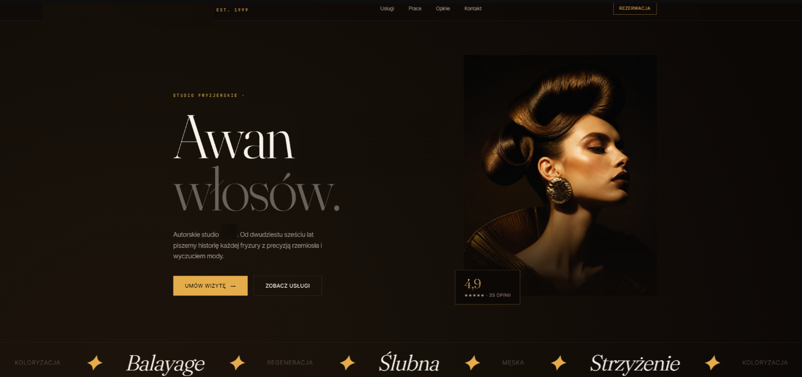

Projekty.
Dwie osobne realizacje, dwa różne charaktery — każda strona projektowana od zera pod branżę i odbiorcę klienta. Poniżej krótki opis każdego z projektów.
Studio fotograficzne
Strona dla fotografa specjalizującego się w sesjach noworodkowych, ciążowych, rodzinnych i ślubnych. Nacisk na ciepły, delikatny nastrój — jasna paleta barw, duże zdjęcia i spokojny układ, który ma budować zaufanie przed rezerwacją sesji. Projekt wykonany w celach demonstracyjnych.

Salon fryzjerski Avangarda
Strona autorskiego studia fryzjerskiego działającego od 1999 roku. Tu kierunek jest odwrotny niż w poprzednim projekcie — ciemne, złote tło, mocny kontrast i elegancka typografia szeryfowa, by podkreślić premium charakter marki i ponad dwudziestoletnie doświadczenie. Projekt wykonany w celach demonstracyjnych.
